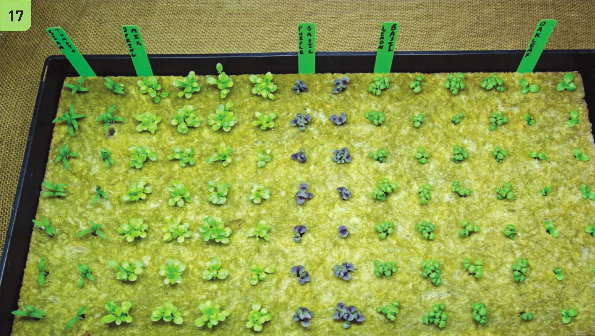

12 Plug in the heat mat to the heat mat controller. Weave the controller's thermometer through one of the humidity dome vents and insert it into the stone wool. 13 Secure the humidity dome on the tray and pull any excess slack on the thermometer cord. 14 Set the heat mat controller to a desired minimum temperature. Various target germination temperatures can be found in the appendix in the Crop Selection Charts. 15 For the first few days, there should be no need to touch the seedling tray. The initial stone wool rinsing/soaking will provide enough moisture for several days. 16 Remove the humidity dome once 50 percent of the seedlings have germinated. For most vegetable crops this will be after 3 to 5 days. Leaving the humidity dome on too long can increase the chance of fungal diseases and seedling death. 17 Sto ne wool will feel heavy when it is wet and it is noticeably lighter when in need of irrigation. It is best to develop a sense of how much water is in your seedling sheet by lifting up the tray to gauge the weight. Irrigate with a nutrient solution when the tray feels light; often this is every 2 to 4 days indoors depending on air temperature and crop age. Depending on the environment, it may not be necessary to irrigate the seedlings at all, because they may be ready to transplant into your hydroponic garden within 1 to 2 weeks before an irrigation would be necessary. •4* * §> •v Vj . *'T ^ ' ■> 5‘ - b ■-r i *> J , 4 " lit y • 4| £ »*■ % V 4^ * JJi • t" *• L . — 140 DIY HYDROPONIC GARDENS
